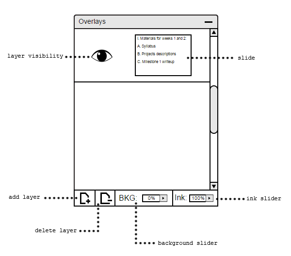

Figure 50: Overlays Window Overview.
Add Layer: The add layer button is to add a new, clean layer on top of a specific slide. For more information, please click here.
Delete Layer: The delete layer button lets the user delete any layer, besides the slides, from the overall lecture file. For more information, please click here.
Layer Visibility: The layer visibility button lets the user make a specific layer insivible or visible. The default setting of the visibility is visible. For more information, please click here.
Background Slider: The background slider determines the the visibility of the layer's background. The default setting of a layer's background is 0%. For more information, please click here.
Ink Slider: The ink slider determines the visibility of the ink on the layer. The default setting of the ink is 100%. For more information, please click here.